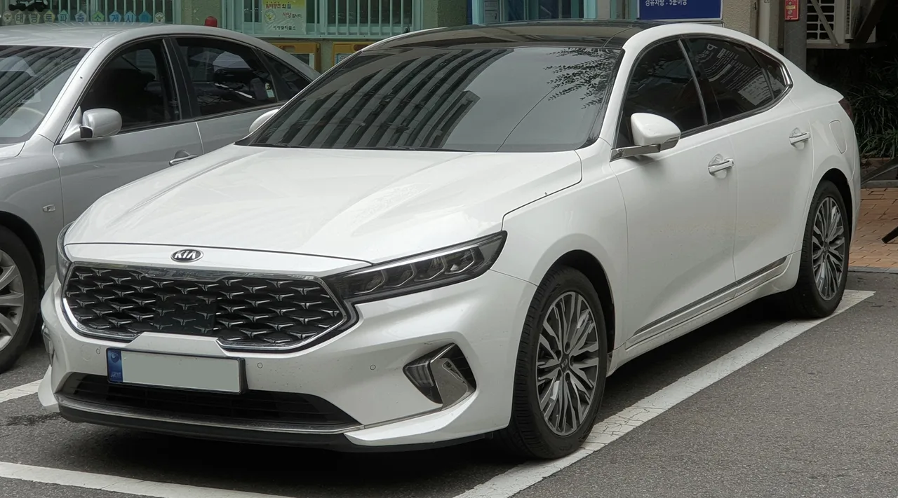

▲ 8월 중고차 시세는 국산·수입 모두 하락했지만, 인기 SUV·하이브리드 모델은 오히려 오르는 등 차종별 양극화가 뚜렷했다
1. 전체 시세는 하락, 그런데 오른 차도 있다
중고차 플랫폼 KG모빌리티플랫폼이 발표한 2026년 8월 중고차 시세 분석에 따르면, 국산차 평균 시세는 전월 대비 1.6%, 수입차는 1.7% 하락했다. 전체적인 흐름만 보면 여전히 하락세지만, 세부적으로 들여다보면 이야기가 달라진다. 회사 측은 "고객 수요가 높은 신차급 인기 모델은 상승 또는 보합세를 기록했다"고 밝혔다. 즉 평균값만으로는 드러나지 않는 차종별 온도차가 뚜렷하다는 의미다.

▲ 기아 셀토스. 8월 중고 시세가 2.9% 오르며 이번 조사에서 가장 두드러진 상승폭을 보였다 ⓒ 기아
2. SUV·하이브리드는 웃었다 — 상승·보합 모델
이번 조사에서 강세를 보인 차종은 대부분 SUV·RV, 그중에서도 하이브리드 모델에 몰려 있다. 디 올뉴 셀토스가 2.9% 올라 가장 큰 상승폭을 보였고, 더 뉴 쏘렌토 4세대 하이브리드가 1.3% 상승했다. 더 뉴 기아 레이 EV도 0.2% 소폭 상승했으며, 더 뉴 그랜저·더 뉴 아반떼·디 올뉴 싼타페 하이브리드는 보합세를 유지했다. 신차 가격 조정과 맞물려 상대적으로 합리적인 가격대를 형성한 모델들이 중고 시장에서도 힘을 받는 모습이다.

▲ 기아 레이. 더 뉴 기아 레이 EV는 8월 중고 시세가 0.2% 소폭 상승하며 보합에 가까운 강세를 보였다 ⓒ 기아
| 구분 | 차종 | 전월 대비 변동 |
|---|---|---|
| 상승·강세 | 디 올뉴 셀토스 | +2.9% |
| 더 뉴 쏘렌토 4세대 하이브리드 | +1.3% | |
| 더 뉴 기아 레이 EV | +0.2% | |
| 하락·약세 | 그랜저 IG | -4.1% |
| 더 뉴 그랜저(GN7) | -3.9% | |
| 올뉴 K7 | -3.7% | |
| K7 프리미어 | -3.3% |
📍 참고로 알아두면 좋은 것
중고차 시세는 매물 수(공급)와 구매 수요가 동시에 반영되는 지표다. 신차가 잘 팔리는 모델은 보증·신뢰도에 대한 인식이 좋아 중고 시세도 함께 견조하게 유지되는 경향이 있는 반면, 신형 모델이 나오면서 구형 재고가 한꺼번에 시장에 풀리는 차종은 공급 과잉으로 가격이 눌리기 쉽다.
3. 준대형 세단은 왜 흔들렸나
반대로 가장 뚜렷한 하락세를 보인 것은 준대형 세단이다. 그랜저 IG가 4.1% 내렸고, 더 뉴 그랜저(GN7)도 3.9% 하락했다. 기아 K7 역시 올뉴 K7이 3.7%, K7 프리미어가 3.3% 떨어지며 준대형 세단 전반의 약세를 뒷받침했다. 배경으로는 신형 그랜저 출시가 지목된다. 신차를 구입한 소비자들이 기존에 타던 그랜저·K7을 잇달아 처분하면서, 중고 시장에 준대형 세단 매물이 한꺼번에 늘어난 것이 가격 하락으로 이어졌다는 분석이다.

▲ 현대 그랜저(GN7). 신형 출시로 기존 차량의 처분 매물이 늘면서 8월 중고 시세가 3.9% 하락했다 ⓒ CarPrism

▲ 기아 K7 프리미어. 8월 중고 시세가 3.3% 하락하며 준대형 세단 약세 흐름에 함께 놓였다 ⓒ Wikimedia Commons
4. 역설적으로 지금이 '구형 그랜저·K7'을 사기 좋은 시점
업계에서는 이번 하락세를 오히려 소비자에게 유리한 기회로 보기도 한다. 신형 그랜저 출시로 기존 인기 준대형 세단의 매물이 늘어난 만큼, 상대적으로 저렴한 가격에 그랜저 IG·GN7이나 K7을 구매할 수 있는 여건이 만들어졌다는 것이다. 실제로 준대형 세단은 상품성과 브랜드 인지도가 이미 검증된 차급인 만큼, 가격이 눌린 지금이 진입 시점으로는 나쁘지 않다는 평가도 나온다.

▲ 기아 쏘렌토 하이브리드. 1.3% 상승하며 하이브리드 SUV의 중고 시세 강세를 보여준 대표 사례로 꼽혔다 ⓒ Wikimedia Commons
5. '양극화'로 요약되는 8월 중고차 시장
종합하면 2026년 8월 중고차 시장은 한마디로 '양극화'로 요약된다. 전체 평균은 하락했지만, 신차급 인기 SUV·하이브리드 모델은 상승 또는 보합을 유지했고, 신형 출시로 매물이 늘어난 준대형 세단은 눈에 띄게 약세를 보였다. 이는 소비자 입장에서 단순히 "중고차 시세가 떨어졌다"는 평균치만 보고 판단하기보다, 관심 차종별로 흐름을 따로 확인해야 한다는 점을 보여준다. 관련 데이터는 KG모빌리티플랫폼 공식 사이트에서 확인할 수 있다. 바로가기

▲ 딜러십에 늘어선 매물들. 차종별 등락폭이 엇갈리는 만큼 구매 전 관심 모델의 개별 시세 흐름을 확인하는 것이 중요하다 ⓒ Wikimedia Commons (CC BY-SA 2.0)
✅ 8월 중고차 시세, 이것만은 확인하세요
· 전체 평균은 국산차 1.6%·수입차 1.7% 하락
· 디 올뉴 셀토스 +2.9%, 쏘렌토 하이브리드 +1.3%로 신차급 SUV·하이브리드는 강세
· 그랜저 IG -4.1%, GN7 -3.9%, K7 계열 -3.3~3.7%로 준대형 세단은 약세
· 원인은 신형 그랜저 출시에 따른 기존 차량 처분 매물 증가
· 가격이 눌린 지금이 구형 준대형 세단을 구매하기엔 오히려 유리한 시점이라는 시각도
6. 정리
KG모빌리티플랫폼이 짚은 8월 중고차 시세는 평균치 하나로는 설명되지 않는 시장이었다. 신차급 인기를 그대로 이어받은 셀토스·쏘렌토 하이브리드는 오히려 값이 올랐고, 신형 출시로 매물이 쏟아진 그랜저·K7은 3~4%대 하락을 겪었다. 중고차를 알아보는 소비자라면 전체 시장 흐름보다 관심 차종의 개별 매물 동향을 살피는 것이 더 정확한 판단 기준이 될 전망이다.